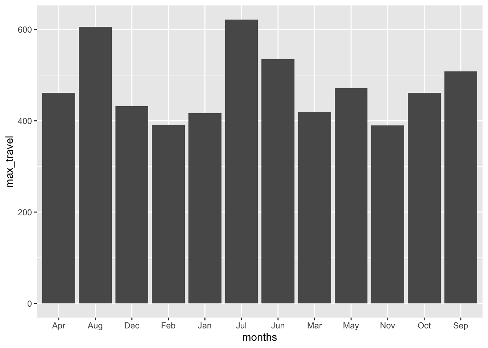
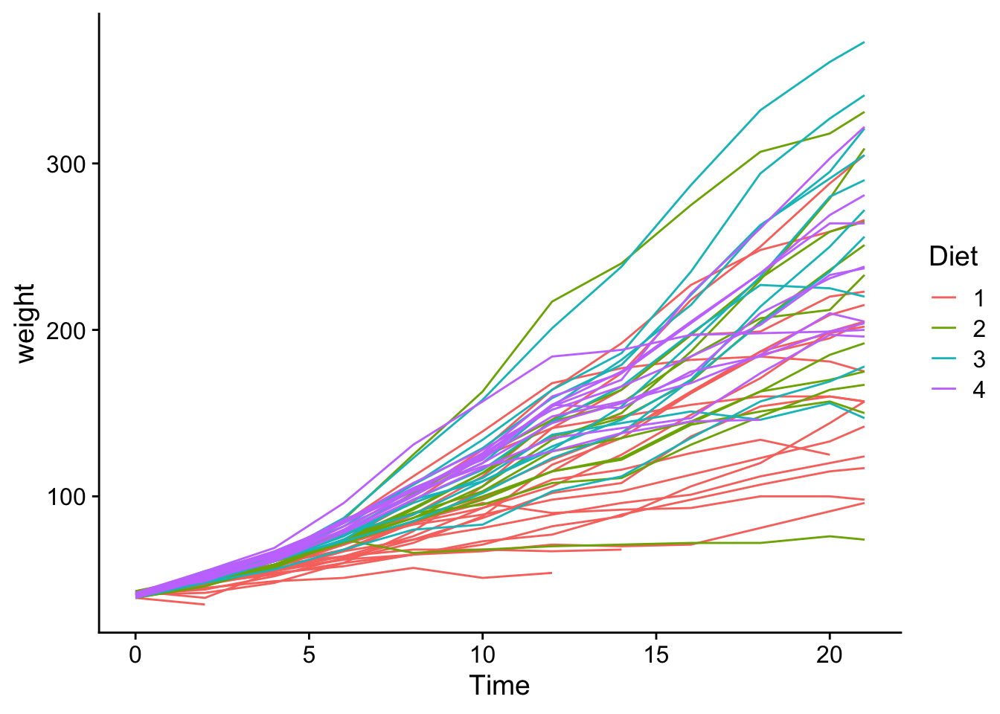
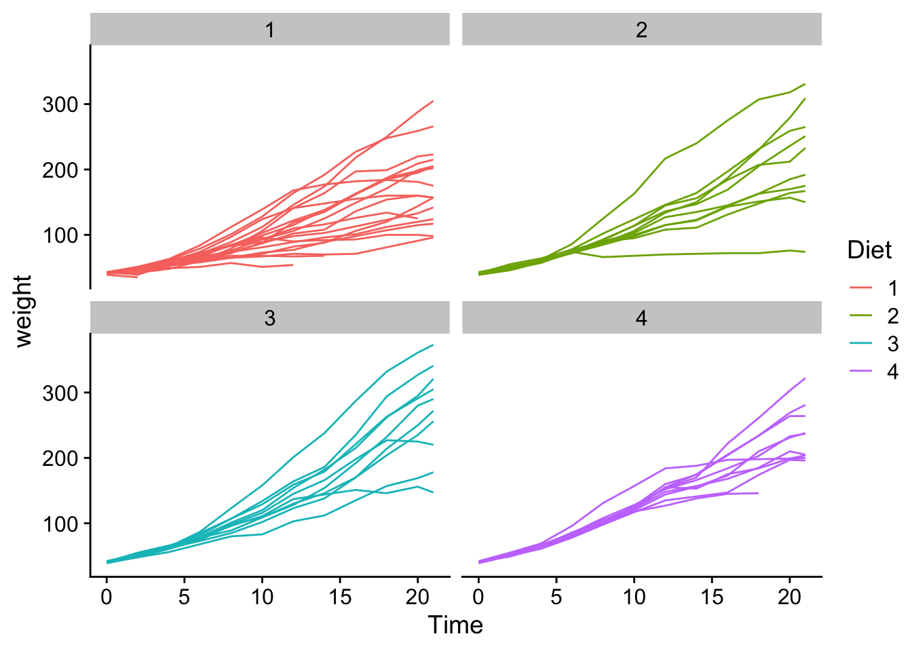
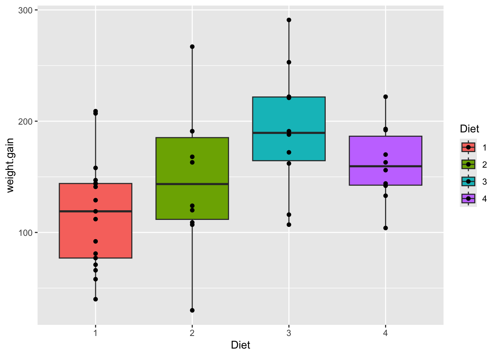

library(tidyverse)
library(cowplot)Data Wrangling with tidyverse
About the activity
Access the Quarto document here.
Download the raw file.
Open it in RStudio.
We will work our way through this quarto document together during class. The activity will cover reshaping, filtering, and summarizing data using tidyverse principles.
Load the Tidyverse Package
Reshaping and Summarizing Data
A common type of data that requires reshaping is time course data.
Using tidyverse principles answer the questions below:
1. Which month had the most and least passengers in the AirPassengers data?
The AirPassengers data which is a time-series of data representing the monthly international airline passenger numbers from January 1949 to December 1960. Search for AirPassengers in the Help to learn more about the dataset.
# Load and inspect the data, a little reshaping here to get in to an easy to read format for you.
AP_matrix <- matrix(AirPassengers, nrow = length(unique(floor(time(AirPassengers)))), byrow = TRUE)
colnames(AP_matrix) <- month.abb
rownames(AP_matrix) <- unique(floor(time(AirPassengers)))
AP_df <- as.data.frame(AP_matrix)
AP_df$Year <- rownames(AP_matrix)A. Is the data long or wide? What form does it need to be in? How can you convert to the form you need?
AP_df Jan Feb Mar Apr May Jun Jul Aug Sep Oct Nov Dec Year
1949 112 118 132 129 121 135 148 148 136 119 104 118 1949
1950 115 126 141 135 125 149 170 170 158 133 114 140 1950
1951 145 150 178 163 172 178 199 199 184 162 146 166 1951
1952 171 180 193 181 183 218 230 242 209 191 172 194 1952
1953 196 196 236 235 229 243 264 272 237 211 180 201 1953
1954 204 188 235 227 234 264 302 293 259 229 203 229 1954
1955 242 233 267 269 270 315 364 347 312 274 237 278 1955
1956 284 277 317 313 318 374 413 405 355 306 271 306 1956
1957 315 301 356 348 355 422 465 467 404 347 305 336 1957
1958 340 318 362 348 363 435 491 505 404 359 310 337 1958
1959 360 342 406 396 420 472 548 559 463 407 362 405 1959
1960 417 391 419 461 472 535 622 606 508 461 390 432 1960AP_long <- AP_df |> pivot_longer(cols = 1:12, names_to = "months", values_to = "count")B. How can we extract the the most and least traveled months each year?
AP_long |>
group_by(months) |>
summarise(max_travel = max(count)) |>
arrange(max_travel) |>
ggplot(aes(x = months, y = max_travel)) + geom_col()
2. What was the percent increase in passengers each year between Aug and Nov?
# To answer this question we need to find the ratio of Aug and Nov travelers. We need the data in the wide format.
# how can we add the ratio to get the percent increase?
AP_long# A tibble: 144 × 3
Year months count
<chr> <chr> <dbl>
1 1949 Jan 112
2 1949 Feb 118
3 1949 Mar 132
4 1949 Apr 129
5 1949 May 121
6 1949 Jun 135
7 1949 Jul 148
8 1949 Aug 148
9 1949 Sep 136
10 1949 Oct 119
# ℹ 134 more rowsAP_df |> mutate(ratio = ((Aug/Nov)-1) *100) |>
select(ratio) ratio
1949 42.30769
1950 49.12281
1951 36.30137
1952 40.69767
1953 51.11111
1954 44.33498
1955 46.41350
1956 49.44649
1957 53.11475
1958 62.90323
1959 54.41989
1960 55.384623. Which diet lead to heavier chicks?
We will use the ChickWeight data. Use the help to read more about the data.
# First look at the data.
glimpse(ChickWeight)Rows: 578
Columns: 4
$ weight <dbl> 42, 51, 59, 64, 76, 93, 106, 125, 149, 171, 199, 205, 40, 49, 5…
$ Time <dbl> 0, 2, 4, 6, 8, 10, 12, 14, 16, 18, 20, 21, 0, 2, 4, 6, 8, 10, 1…
$ Chick <ord> 1, 1, 1, 1, 1, 1, 1, 1, 1, 1, 1, 1, 2, 2, 2, 2, 2, 2, 2, 2, 2, …
$ Diet <fct> 1, 1, 1, 1, 1, 1, 1, 1, 1, 1, 1, 1, 1, 1, 1, 1, 1, 1, 1, 1, 1, …A. Count how many timepoints were measured and how many chicks were on each Diet.
# How can you count the timepoints, chicks, and diets, and chicks nested in diets?
ChickWeight |> count(Diet) Diet n
1 1 220
2 2 120
3 3 120
4 4 118ChickWeight |> count(Time) Time n
1 0 50
2 2 50
3 4 49
4 6 49
5 8 49
6 10 49
7 12 49
8 14 48
9 16 47
10 18 47
11 20 46
12 21 45ChickWeight |> count(Chick) Chick n
1 18 2
2 16 7
3 15 8
4 13 12
5 9 12
6 20 12
7 10 12
8 8 11
9 17 12
10 19 12
11 4 12
12 6 12
13 11 12
14 3 12
15 1 12
16 12 12
17 2 12
18 5 12
19 14 12
20 7 12
21 24 12
22 30 12
23 22 12
24 23 12
25 27 12
26 28 12
27 26 12
28 25 12
29 29 12
30 21 12
31 33 12
32 37 12
33 36 12
34 31 12
35 39 12
36 38 12
37 32 12
38 40 12
39 34 12
40 35 12
41 44 10
42 45 12
43 43 12
44 41 12
45 47 12
46 49 12
47 46 12
48 50 12
49 42 12
50 48 12ChickWeight |>
filter(Time == "0") |>
count(Diet) Diet n
1 1 20
2 2 10
3 3 10
4 4 10ChickWeight |>
group_by(Diet) |>
summarise(no.chicks = n_distinct(Chick))# A tibble: 4 × 2
Diet no.chicks
<fct> <int>
1 1 20
2 2 10
3 3 10
4 4 10table(ChickWeight$Time, ChickWeight$Diet)
1 2 3 4
0 20 10 10 10
2 20 10 10 10
4 19 10 10 10
6 19 10 10 10
8 19 10 10 10
10 19 10 10 10
12 19 10 10 10
14 18 10 10 10
16 17 10 10 10
18 17 10 10 10
20 17 10 10 9
21 16 10 10 9B. Now figure out which diet leads to the heaviest chicks.
# we can plot it to get a first view
ChickWeight |>
ggplot(aes(x = Time, y = weight, group = Chick, color = Diet)) +
geom_line() +
theme_cowplot()
ChickWeight |>
ggplot(aes(x = Time, y = weight, group = Chick, color = Diet)) +
geom_line() +
theme_cowplot() +
facet_wrap(~ Diet)
How much weight gain from each Diet
data <- ChickWeight |>
pivot_wider(names_from = Time, names_prefix = "day_", values_from = weight)
data <- data |> mutate(weight.gain = day_18 - day_0)
data |>
ggplot(aes(x = Diet, y = weight.gain, fill = Diet)) +
geom_boxplot() +
geom_point()Warning: Removed 3 rows containing non-finite outside the scale range
(`stat_boxplot()`).Warning: Removed 3 rows containing missing values or values outside the scale range
(`geom_point()`).
mod <- aov(weight.gain ~ Diet, data = data)
summary(mod) Df Sum Sq Mean Sq F value Pr(>F)
Diet 3 37479 12493 4.63 0.00682 **
Residuals 43 116029 2698
---
Signif. codes: 0 '***' 0.001 '**' 0.01 '*' 0.05 '.' 0.1 ' ' 1
3 observations deleted due to missingnessTukeyHSD(mod) Tukey multiple comparisons of means
95% family-wise confidence level
Fit: aov(formula = weight.gain ~ Diet, data = data)
$Diet
diff lwr upr p adj
2-1 29.64706 -25.67665 84.97077 0.4867633
3-1 74.94706 19.62335 130.27077 0.0041372
4-1 44.54706 -10.77665 99.87077 0.1533433
3-2 45.30000 -16.78246 107.38246 0.2229497
4-2 14.90000 -47.18246 76.98246 0.9179605
4-3 -30.40000 -92.48246 31.68246 0.5626028pairwise.t.test(data$weight.gain, data$Diet, p.adjust.method = "BH")
Pairwise comparisons using t tests with pooled SD
data: data$weight.gain and data$Diet
1 2 3
2 0.2371 - -
3 0.0046 0.1154 -
4 0.1112 0.5247 0.2371
P value adjustment method: BH library(lme4)Loading required package: Matrix
Attaching package: 'Matrix'The following objects are masked from 'package:tidyr':
expand, pack, unpacklibrary(lmerTest)
Attaching package: 'lmerTest'The following object is masked from 'package:lme4':
lmerThe following object is masked from 'package:stats':
stepmod2 <- lmer(weight ~ Diet * Time + (1 | Chick), data = ChickWeight)
summary(mod2)Linear mixed model fit by REML. t-tests use Satterthwaite's method [
lmerModLmerTest]
Formula: weight ~ Diet * Time + (1 | Chick)
Data: ChickWeight
REML criterion at convergence: 5466.9
Scaled residuals:
Min 1Q Median 3Q Max
-3.3158 -0.5900 -0.0693 0.5361 3.6024
Random effects:
Groups Name Variance Std.Dev.
Chick (Intercept) 545.7 23.36
Residual 643.3 25.36
Number of obs: 578, groups: Chick, 50
Fixed effects:
Estimate Std. Error df t value Pr(>|t|)
(Intercept) 31.5143 6.1163 70.7030 5.152 2.23e-06 ***
Diet2 -2.8807 10.5479 69.6438 -0.273 0.786
Diet3 -13.2640 10.5479 69.6438 -1.258 0.213
Diet4 -0.4016 10.5565 69.8601 -0.038 0.970
Time 6.7115 0.2584 532.8900 25.976 < 2e-16 ***
Diet2:Time 1.8977 0.4284 527.6886 4.430 1.15e-05 ***
Diet3:Time 4.7114 0.4284 527.6886 10.998 < 2e-16 ***
Diet4:Time 2.9506 0.4340 528.0372 6.799 2.86e-11 ***
---
Signif. codes: 0 '***' 0.001 '**' 0.01 '*' 0.05 '.' 0.1 ' ' 1
Correlation of Fixed Effects:
(Intr) Diet2 Diet3 Diet4 Time Dt2:Tm Dt3:Tm
Diet2 -0.580
Diet3 -0.580 0.336
Diet4 -0.579 0.336 0.336
Time -0.426 0.247 0.247 0.247
Diet2:Time 0.257 -0.431 -0.149 -0.149 -0.603
Diet3:Time 0.257 -0.149 -0.431 -0.149 -0.603 0.364
Diet4:Time 0.254 -0.147 -0.147 -0.432 -0.595 0.359 0.359